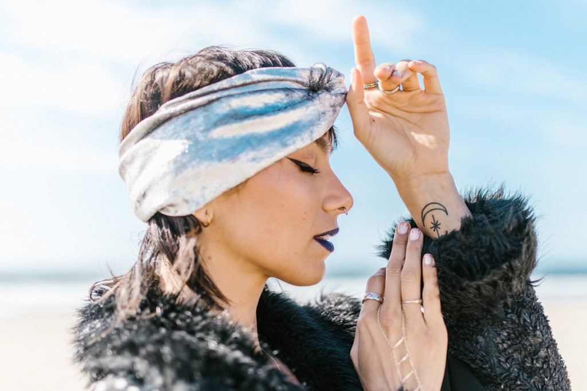
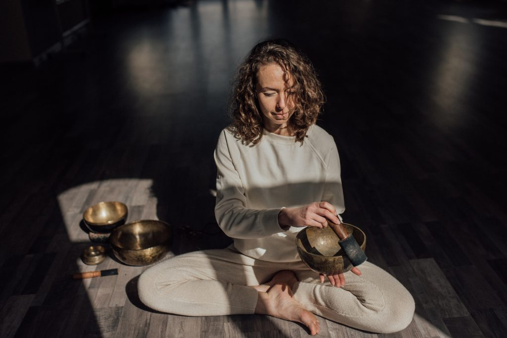
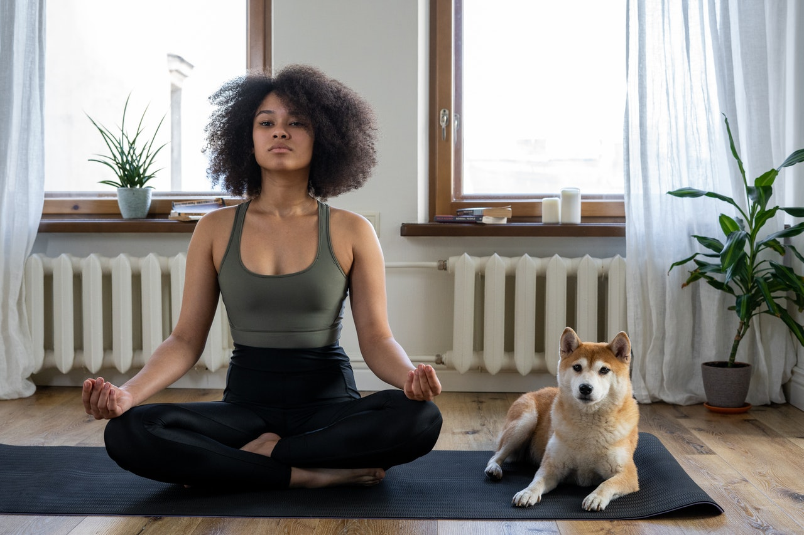

Leadership
Emily Brand: Lead
Emily Ellen Brand has worked in business leadership for going on 22 years. She is the CEO and business lead of the company, Traditional Pagan Crafts, which educates and enriches lives with long-established, but often forgotten or overlooked knowledge of the physical and metaphysical world. She is a strongly motivated individual and has helped these courses and what they offer become recognized nationally.
Jamie Bronze
Jamie Lynn Bronze has been working in business for 12 years now. She is a Junior Business Lead and fills in for Emily Brand when the CEO cannot be everywhere at once. Her main focus in leadership is to maintain the modest budget and make sure that everyone in the company is happy and has what they need to do their job more successfully than ever. She has taken all of the courses offered by the company and works with the instructors to come up with new ideas for exciting events, as well as sharing excellent resources for continuing their education in traditional arts.
John Smith
John William Smith has been working in business leadership for going on 25 years. He is the assistant leader to Emily Brand, and his focus is external relations. Having been the owner of several businesses in the KC area, he understands very well the importance of building friendships and working together with other companies. Having a background in law and having worked 10 years in his youth as an attorney, Mr. Smith overlooks any legal aspects of the company.
Sales
Jacquelyn Smith: Lead
Jacquelyn Elizabeth Smith has worked in sales for going on 20 years. She is the Sales Lead and has been a huge proponent in advertising this company's name as a nationally rated mecca of traditional arts. She is the reason why our instructors are even known globally for their work. Internally, Mrs. Smith overlooks the budget and finances for the company. She has astounded her coworkers with her ability seemingly make the impossible possible.
Johnson Johnson
Johnson Frederick Johnson has worked with the company for 10 years now. Having owned multiple Air BnBs in and around the Kansas City area, he has a wide network of friends in the business of vacation rentals and travel. Mr. Johnson has helped make the courses at Traditional Pagan Crafts a hotspot destination here in the midwest. Our direct advertising through alternative lodging reaches a majority of the midwest now, where we have picked up new customers on vacation from as far as Salt Lake City, Utah and Eau Claire, Wisconsin.
Jennifer Dumar
Jennifer Ann Dumar helped found this company along with Jesse Molina and Gabriel Garnet back in 2011. After graduating from Washington State University with degrees in both advertising and business, Mrs. Dumar became awe-struck when she came home to Kansas City by Jesse and Gabriel's passion for their crafts. The three decided to build a company and Mrs. Dumar was their gateway into the business world. Her main focus is building and maintaining the company's brand.
Administration and Support
Harvey Jefferbeck: Operations Lead
Harvey Lewis Jefferbeck works at Traditional Pagan Crafts as the Operations and Administration Lead. She oversees the creation and production of all events and event spaces. In the past year, through her leadership, Traditional Pagan Crafts was able to purchase its own building with multiple spacious workspaces including an entire acre of forest.
Jefferson Long
Jefferson Donald Long is second in command to Mrs. Jefferbeck in organizing and producing events and regular courses. Mr. Long spends most of his time at the facility fixing small problems and noting things that would ease the comfort and effectiveness of our instructors and clients. He is married to Mrs. Dumae and they are expecting their first born in July of this year!
Lindsey Barth
Lindsey Abigail Barth works as Support and Human Resources lead under Mrs. Jefferbeck. She addresses client and staff concerns and works with the entire team to resolve them. She has 30 years experience in human resources and spends most of her time scheduling courses and events as well as answering client questions about the business.
Instructors

Jesse Molina: Instructor Lead
Jesse Molina is considered the founder of Traditional Pagan Crafts. She also owns a perfume company called Peculiar Mystic that spurred the creation of this business. Aside from managing and producing Peculiar Mystic, she works freelance as a Reiki Master performing energy healing sessions for individuals. Her aura is a welcoming light salmon color. Her areas of expertise include Astrology and birth charts, Herbology (especially when concerning scents and energetic properties), and Tarot.

Gabriel Garnet
Gabriel "Ruby" Garnet is also one of the founders of Traditional Pagan Crafts. She met Jesse and Jennifer while selling healing crystals, gemstones, and handmade gemstone jewelry at First Friday's in the Crossroads. Gabriel also works as a yoga master and fitness instructor at Inner Space Yoga in Kansas City. Her areas of expertise include Herbology, Gemstones and Crystals, and making traditional and modern jewelry and crafts by hand.

Tara Millhouse
Tara Jean Millhouse has worked with Traditional Pagan Crafts for 7 years now. She started as an employee at Peculiar Mystic after befriending Miss Jesse at First Fridays. Tara had two booths that she would work; One was performing free Palmistry and Tarot readings for interested passersby, and the other was selling adorable, but deeply profound cartoon images via a multitude of media. She joined the company after successfully creating a full three lessons of Palmistry. Miss Jesse and Miss Tara hope to soon combine the messages from Palmistry with the narration of Astrology to create a more active understanding of one's being.